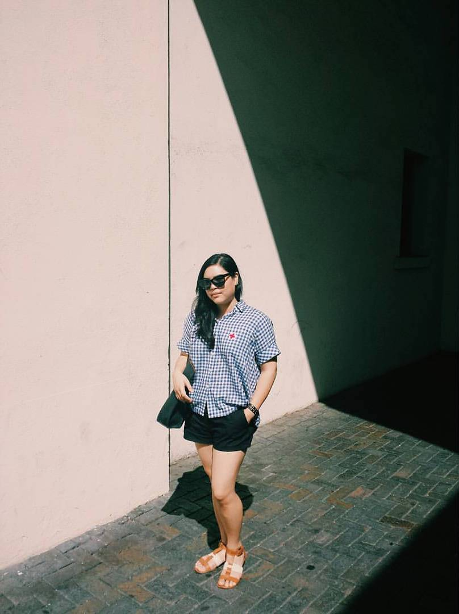

About Me
My name is Tracy Le. I am Vietnamese American born in Northern California. I currently live in San Diego and it's been four years living in this beautiful city! I received my Bachelor's degree in Art History and minor in Business from Arizona State University. Along with my classmates, I studied abroad in Lyon, France from June to July in 2018. I fell in love with the food, the culture, and the arts. My passion for art grew during my high school years and I love learning about museum practices. In my free time I enjoy visiting different museums with my friends and family, visiting La Jolla beach, and grabbing a latte at a local coffee shop. Here are a few museums I recommend if you happen to visit in San Diego: